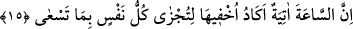
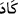
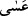

“Muhakkak ki ben, Allâh’ım.” Âyetin bu bölümü usûl ilminin furû‘dan önce
geldiğine delâlet eder. Çünkü tevhid, usûl konularındandır. Aşağıda gelen ibâdet
furû‘dandır. “Benden başka ilah yoktur” durum böyle olunca “bana kulluk et.” ibâdeti
bana mahsus kıl. Bana ibadette şirk koşma, muvahhid ol. “Beni anmak” zikretmek ve
zâkir olmak “için namaz kıl.” Namaz, fazileti sebebiyle “bana kulluk/ibâdet et”
şeklindeki genel emirden sonra özel olarak zikredilmiştir. Gerektiği gibi Allâh’ı zikir
lisânın, kalbin ve diğer organların Allâh’a ibâdet ile meşgul olmasıdır. Namaz bunların
tümünü içine alır.
et-Te’vîlâtü’n-Necmiyye’de der ki: “Her an yenilenen vücûdunu ifnâ etmek için
devamlı tecellî ile seni anmama nâil olmak için vücûdunu bezlederek bana münâcâta ve
benimle muhâdaraya/Hakk’ın huzûrunda bulunma duygusuna devam et.”
15. Kıyamet günü mutlaka gelecektir. Herkes peşinde koştuğu şeyin karşılığını
bulsun diye neredeyse onu gizleyeceğim.
“Kıyamet günü mutlaka gelecektir.” Bu âyet, ibadetin ve namaz kılmanın niçin vâcib
olduğunun illetini göstermektedir. Kıyâmetin koptuğu zamana “ (saat)” denir. Çünkü
(saat)” denir. Çünkü
kıyâmet saati kendisinde çok büyük bir işin meydana geldiği gerçek saattir. Yâni
mutlaka meydana gelecektir. Kıyametin vukûunun kesinliğini göstermek ve muhataplara
yönelen kesin bir iş olarak canlandırmak için “gelmek” kelimesi ile ifâde edilmiştir.
İtâatkâr ile isyankâr birbirinden ayrılsın diye, hayır olsun şer olsun “Herkes peşinde
koştuğu şeyin karşılığını bulsun diye neredeyse onu gizleyeceğim.” Celâleyn
Tefsîri’nde der ki: “İnsanları korkutmak ve büyüklüğünü göstermek için kıyametin
vaktini gizlerim.”
Âlimlerden bazıları der ki: “ (neredeyse)” bir şeyin olmak üzere olduğunu ifade
etmek için olsa da Allah Teâlâ için kullanıldığında kesinlik ve vücûb ifâde eder. Buna
göre âyetin mânâsı; ‘İnsanlar her zaman ondan sakınsınlar diye kıyametin vaktini
insanlardan saklamak isterim’ şeklindedir. Nitekim “De ki: (Kıyâmet) yakın olsa
gerek” (el-İsrâ, 17/51) âyetinde “ (gerek ki/umulur ki)” kelimesi kesin olarak yakın
olduğunu ifâde eder. Yâni o yakındır, demektir.
el-İrşâd’da ise şöyle der: “Yâni kıyamet geliyor diye onu ızhâr etmem. Kıyâmetin
geleceğini haber vermekte lütuf ve mâzeretlere son vermek olmasa bunu yapmaz, haber
vermezdim.
et-Te’vîlâtü’n-Necmiyye’de de şöyle der: “Kıyâmeti, onun geleceğini, cennet hallerini
ve nimetlerini, cehennemin korkulu hallerini ve azabının şiddetini neredeyse
gizleyeceğim ki bana yapılan ibâdet cennet arzusuyla ve cehennem korkusuyla olmasın,
bilakis sırf benim rızam için olsun. Nitekim Allah Teâlâ: “Halbuki onlara ancak dini